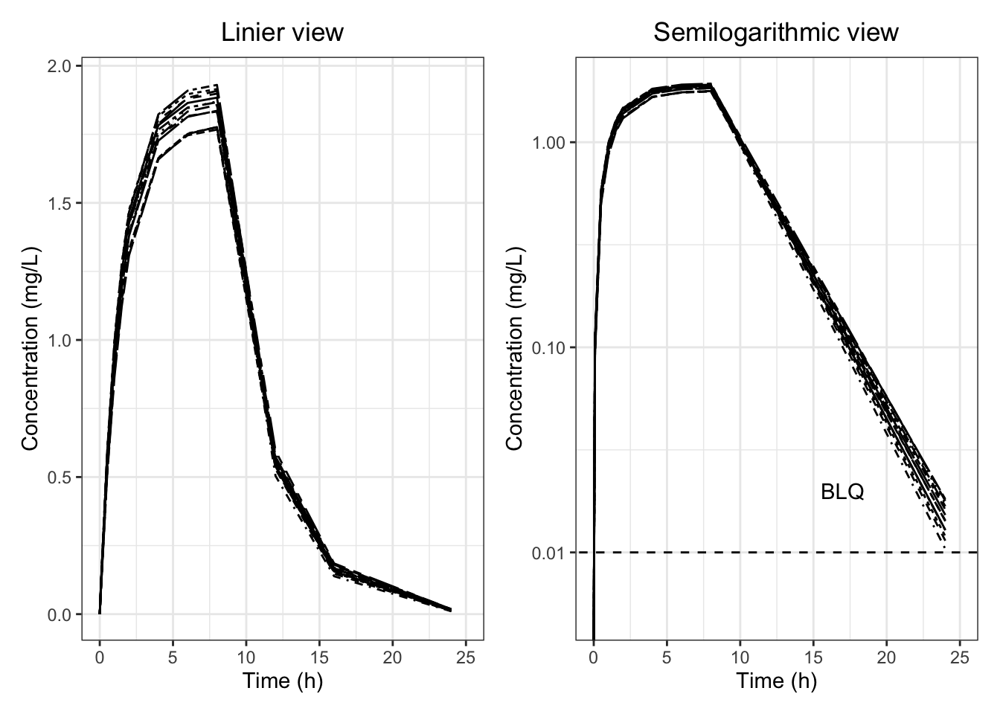

# CRAN から入手可能なパッケージ
##############################
pacman::p_load(
# 一般的なデータ管理
####################
tidyverse,
magrittr,
# パッケージのインストールと管理
################################
pacman, # パッケージのインストール・読み込み
renv, # グループで作業する際のパッケージのバージョン管理
# プロジェクトとファイルの管理
##############################
here, # Rのプロジェクトフォルダを基準とするファイルパス
rio, # 様々なタイプのデータのインポート・エクスポート
# スタイルテーブル関連パッケージ
################################
huxtable, # html,LaTeX,rtf,docx,xlsx and pptxへ変換可能なスタイル
# 図表関連パッケージ
####################
patchwork, # 複数の図表をまとめられるパッケージ
# TLGパッケージ
####################
tidytlg
)9 TLG事例/Figure output(Pharmaverse’s style)
9.0.1 必要なパッケージの準備
9.0.2 データの読み込み
adsl <- import("./output/adsl.xpt")
adnca <- import("./output/adnca.xpt")9.0.3 figure作成プロセス
p1 <- adnca %>%
filter(TRT01A=="Xanomeline Low Dose" &
PARAMCD=="XAN" & ATPTREF=="Day 1") %>%
ggplot(.,aes(x=MRRLT,y=AVAL,group=SUBJID))+
theme_set(theme_classic()) +
geom_line(aes(linetype = SUBJID))+
ggtitle("Linier view") +
xlab("Time (h)")+
coord_cartesian(xlim = c(0, 25))+
ylab("Concentration (mg/L)")+
theme_bw()+
theme(legend.position = "none",plot.title = element_text(hjust = 0.5))
p2<- adnca %>%
filter(TRT01A=="Xanomeline Low Dose" &
PARAMCD=="XAN" & ATPTREF=="Day 1") %>%
ggplot(.,aes(x=MRRLT,y=AVAL,group=SUBJID))+
theme_set(theme_classic()) +
geom_line(aes(linetype = SUBJID))+
geom_abline(intercept = log10(0.01), slope = 0,linetype = 2) +
annotate("text", x=17, y=0.02, label="BLQ")+
ggtitle("Semilogarithmic view") +
xlab("Time (h)")+
coord_cartesian(xlim = c(0, 25))+
scale_y_continuous(trans='log10')+
ylab("Concentration (mg/L)")+
theme_bw()+
theme(legend.position = "none",plot.title = element_text(hjust = 0.5))
g1 <- p1 + p2
g1
p3 <- adnca %>%
filter(TRT01A=="Xanomeline High Dose" &
PARAMCD=="XAN" & ATPTREF=="Day 1") %>%
ggplot(.,aes(x=MRRLT,y=AVAL,group=SUBJID))+
theme_set(theme_classic()) +
geom_line(aes(linetype = SUBJID))+
ggtitle("Linier view") +
xlab("Time (h)")+
coord_cartesian(xlim = c(0, 25))+
ylab("Concentration (mg/L)")+
theme_bw()+
theme(legend.position = "none",plot.title = element_text(hjust = 0.5))
p4 <- adnca %>%
filter(TRT01A=="Xanomeline High Dose" &
PARAMCD=="XAN" & ATPTREF=="Day 1") %>%
ggplot(.,aes(x=MRRLT,y=AVAL,group=SUBJID))+
theme_set(theme_classic()) +
geom_line(aes(linetype = SUBJID))+
geom_abline(intercept = log10(0.01), slope = 0,linetype = 2) +
annotate("text", x=17, y=0.02, label="BLQ")+
ggtitle("Semilogarithmic view") +
xlab("Time (h)")+
coord_cartesian(xlim = c(0, 25))+
scale_y_continuous(trans='log10')+
ylab("Concentration (mg/L)")+
theme_bw()+
theme(legend.position = "none",plot.title = element_text(hjust = 0.5))
g2 <- p3 + p4
g2
9.0.4 rtf作成プロセス
gentlg(huxme = g1,
tlf = "f",
orientation = "landscape",
plotwidth = 8,
plotheight = 5,
file = "./output/Graph01",
title= "test1"
)
gentlg(huxme = g2,
tlf = "f",
orientation = "landscape",
plotwidth = 8,
plotheight = 5,
file = "./output/Graph02",
title= "test1"
)